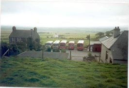
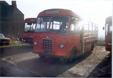

Le garage rouge
Israel Mathew James Williams a établi son commerce ici et a acheté son premier car en 1920. Le garage opérait un service quotidien de cars dans la région. Le garage faisait des réparations de véhicules et vendait de l’essence et de la paraffine.
Une photo de Red Garage Un des bus - Bws Torth
 Matt Williams admirant la Chevrolet
Matt Williams admirant la Chevrolet
 Griffith Richard Williams (affectueusement connu sous le nom de taid bysus (bus grand-père))
Griffith Richard Williams (affectueusement connu sous le nom de taid bysus (bus grand-père))
 Un Charabanc devant Liverpool House
Un Charabanc devant Liverpool House